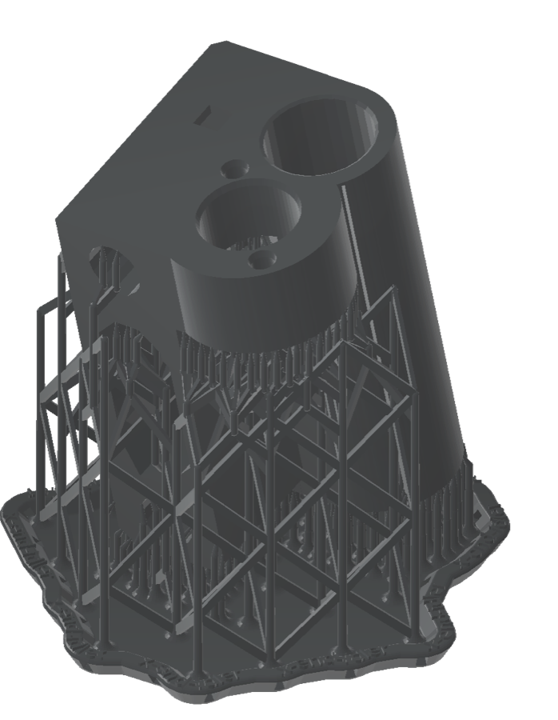

A downloaded STL to a print-ready Form 4 job. One sentence.
You know the routine: open PreForm, import, orient, generate supports, check for cups, add drain holes, read the estimate, upload, wait. This page is a real run where Claude did all of it from one prompt, and the only thing left for a human was to say "yes, send it".

The run
The part is an X-axis idler bracket from the Original Prusa i3 MK3S: two bearing bores, a belt slot, a few M3 holes. A typical "print me a stiff one of these in an engineering resin" job. It was downloaded from the internet the way any part is, dropped in a folder under the home directory, and handed to Claude Code:
Prep ~/formlabs-demo/x-end-idler.stl for the Form 4 in Tough 2000 at 0.1 mm and save the job next to it.
Done. Form 4, Tough 2000 V2, 0.1 mm layers (Supports V2 settings).
- Auto-oriented and supported; 717 layers.
- Validation: no cups, no unsupported minima, not undersupported, no seam line.
- Print time about 1 h 56 min. Resin 45.6 ml total, 35.0 ml of that in the part.
- Saved
~/formlabs-demo/x-end-idler.formand a previewx-end-idler.png.
Open the .form in PreForm to inspect it, or tell me which printer to send it to.
What happened underneath
Every line below is a real tool call from the run, in order, with what came back. This is what the MCP server exposes to Claude; the skill tells it which calls to make and in what order.
health_checkPreFormServer 3.62.1 started on demand and answered.list_materialsLooked up the Form 4 list and pickedFLTO2002(Tough 2000 V2) at 0.1 mm, Supports V2. No guessed codes.create_sceneEmpty Form 4 scene, 200 × 125 × 210 mm build volume.import_modelLoaded the STL with mesh repair on; 37 × 40 × 58 mm, in bounds.auto_orientFlipped the part over and tilted it about 11°, the orientation PreForm judges best for printing.auto_supportSupports and raft with PreForm's default density and touchpoint size.auto_layoutCentred on the platform.get_print_validationcups 0 · unsupported minima 0 · undersupported no · seam line noestimate_print_time6975 s, so 1 h 56 min.get_scene45.6 ml resin, of which 35.0 ml is the part itself.save_formWrotex-end-idler.form(1.0 MB) next to the STL.save_screenshotRendered the image at the top of this page.
Wall-clock time from prompt to saved file: about two minutes, most of it PreForm generating supports. No window was opened.
Then: send it
Printing is the one step that cannot be undone, so the /formlabs:print skill always stops for an explicit yes. On a network with a Form 4, the exchange looks like this:
Send it to the Form 4 on the bench.
Found one printer: Form4-XXXXXX, idle, tank has Tough 2000 V2 loaded, matches the job.
Job x-end-idler: Form 4, Tough 2000 V2, 0.1 mm, 1 h 56 min, 45.6 ml, validation clean.
Send it?
Yes.
Uploaded. The job is queued on Form4-XXXXXX; the printer will show it under Print Queue. It is not started automatically unless you ask.
print_to_printer) with the serial blanked. Claude warns you if the tank material does not match the job.Do it yourself
-
Download a part
Anything from Thingiverse, Printables, GrabCAD, or your CAD export: STL, OBJ, 3MF or STEP. Save it somewhere under your home folder; the server refuses paths outside the directories you allow. The part used here is x-end-idler.stl from Prusa Research's open-hardware repository.
-
Install the plugin (once)
# macOS / Linux curl -fsSL https://mkebiclioglu.github.io/formlabs-claude-skills/install.sh | sh # Windows (PowerShell) irm https://mkebiclioglu.github.io/formlabs-claude-skills/install.ps1 | iexNeeds Node.js 20+ and Claude Code. The script adds the plugin and downloads PreFormServer (Formlabs' headless PreForm) from Formlabs, checking Formlabs' code signature before installing it into a folder you own. No sudo, nothing global. Not on Claude Code? The MCP server runs on its own in Claude Desktop, Cursor and any MCP client:
npx -y formlabs-local-mcp@1.0.4. Details. -
Ask
In Claude Code, in plain words: "Prep
~/parts/bracket.stlfor the Form 4 in Tough 2000 and save it." If you leave out the material, Claude lists the ones your printer supports and asks. Say "print" instead of "prep" and it will find your printer and ask before uploading. -
Read the summary, open the .form if you want
You get printer, material, layer height, print time, resin use, the validation result and the file paths. The .form opens in PreForm like any other; nothing about the job is hidden from you.
Where it starts to pay off
Batches
"Pack all twelve STLs in ~/parts/rev-c onto the Fuse 1+ in Nylon 12 and tell me the total powder use." One prompt, one packed chamber, one estimate.
Material what-ifs
"Same part in Rigid 10K at 0.05 mm, how long?" A second scene and a second estimate in seconds, no re-importing.
Hollowing and drain holes
"Hollow it to 2 mm walls, add drain holes, re-validate." Cups get flagged and holes placed without a mouse.
Reprints
"Open ~/jobs/housing.form, swap the model for housing-v4.stl, keep the orientation, re-estimate."
Your fleet
"Which printers are online and what is loaded in each tank?" Then send the job to the one with the right resin.
Scripts, not clicks
The same tools drive from any MCP client or your own automation. A nightly job that preps every new file in a folder is a prompt away.
What it will not do
- Send a job without your yes.
print_to_printeris gated in the skill and flagged as destructive to the client. - Touch files outside the folders you allow (your home directory by default), or hidden folders like
~/.ssh, whatever a prompt says. - Install PreFormServer from anywhere but
downloads.formlabs.com, or without a valid Formlabs code signature. - See your Formlabs password.
loginreads it from the environment and never returns tokens to the model.
More in the security section of the docs and in SECURITY.md.
Get it
# macOS / Linux
curl -fsSL https://mkebiclioglu.github.io/formlabs-claude-skills/install.sh | sh
# Windows (PowerShell)
irm https://mkebiclioglu.github.io/formlabs-claude-skills/install.ps1 | iexThen open Claude Code and run /formlabs:setup. Tried it? Tell us what you printed in Show and tell, and report anything that went sideways as an issue. Both repos are MIT and take pull requests.